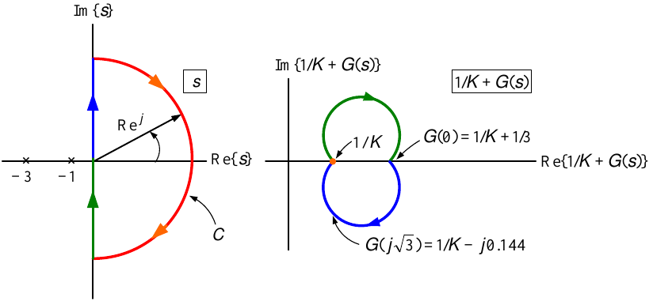

Frequency Response Methods
System Modeling and Control · Chapter 11
\(\ \) \(G(j\omega )=\dfrac{(j\omega +40)(j\omega /0.4+1)}{(j\omega /400+1)(j\omega +4)^{3}}=\dfrac{40}{4^{3}}\dfrac{(j\omega /40+1)(j\omega /0.4+1)}{(j\omega /400+1)(j\omega /4+1)^{3}}.\)
\[\begin{aligned} 20\log _{10}|G(j\omega )| &=&20\log _{10}\left\vert 40/64\right\vert +20\log _{10}|j\omega /0.4+1|+60\log _{10}|1/(j\omega /4+1)| \\ &&+20\log _{10}|j\omega /40+1|+20\log _{10}|1/(j\omega /400+1)| \end{aligned}\]

Principle of the Argument \(G(s)=\dfrac{1}{(s+1)(s+3)}.\)

For \(\omega \geq 0\) we have
\[G(j\omega )=\frac{1}{(j\omega +1)(j\omega +3)}=\frac{(1-j\omega )(3-j\omega )}{(1+\omega ^{2})(9+\omega ^{2})}=\frac{3-\omega ^{2}-j4\omega }{(1+\omega ^{2})(9+\omega ^{2})}\]
so that
\[G(j0)=1/3,\;G(j\sqrt{3})=\frac{-j4\sqrt{3}}{(4)(12)}=-j0.144,\;G(j\omega )\approx -\frac{1}{\omega ^{2}}\;\text{for}\;\omega \;\text{large.}\;\]
Principle of the Argument \(G(s)=\dfrac{1}{(s+1)(s+3)}\)

\[\begin{array}{|c|c|} \hline \theta & G(Re^{j\theta })\approx \dfrac{1}{R^{2}}e^{-j2\theta } \\ \hline -\pi /2 & e^{j\pi }/R^{2}=-1/R^{2} \\ \hline -3\pi /4 & e^{j3\pi /2}/R^{2}=-j/R^{2} \\ \hline -\pi & e^{j2\pi }/R^{2}=1/R^{2} \\ \hline -5\pi /4 & e^{j5\pi /2}/R^{2}=j/R^{2} \\ \hline -3\pi /2 & e^{j3\pi }/R^{2}=-1/R^{2} \\ \hline \end{array}\]
Principle of the Argument \(G(s)=\dfrac{1}{(s+1)(s+3)}\)

There are two poles of \(G(s)\) inside the closed curve \(\mathcal{C}\) so \(P=2.\)
There are no zeros of \(G(s)\) inside the closed curve \(\mathcal{C}\) so \(Z=0.\)
By inspection the image of \(G(s)\) on this curve goes around the origin twice
in the counterclockwise direction so \(N=-2.\)
We have thus verified that
\[N=Z-P.\]
Principle of the Argument \(G(s)=\dfrac{10(s+1)}{s(s-10)}=-\dfrac{s+1}{s(-s/10+1)}\)
The closed curve \(\mathcal{C}\) is taken to enclose the right half-plane.
Let \(s=Re^{j\theta }\) with \(-\pi /2\leq \theta \leq \pi /2\) and let \(R\rightarrow \infty .\)
Avoid pole at \(s=0\) by letting \(s=re^{j\theta },\) \(-\pi /2\leq \theta \leq \pi /2\) with \(r\rightarrow 0.\)

For \(s=j\omega\) we have
\[\begin{aligned} G(j\omega )=-\frac{j\omega +1}{j\omega (-j\omega /10+1)} &=&-\frac{(j\omega +1)(-j\omega )(j\omega /10+1)}{\omega ^{2}(\omega ^{2}/100+1)} \\ &=&\frac{-\omega ^{2}(1+1/10)+j\omega (1-\omega ^{2}/10)}{\omega ^{2}(\omega ^{2}/100+1)}. \end{aligned}\]
Principle of the Argument \(G(s)=\dfrac{10(s+1)}{s(s-10)}=-\dfrac{s+1}{s(-s/10+1)}\)

\[G(re^{j\theta })=\frac{10(re^{j\theta }+1)}{re^{j\theta }(re^{j\theta }-10)}\approx \frac{10}{re^{j\theta }(-10)}=-e^{-j\theta }/r.\begin{array}{|c|c|} \hline \ \ \theta & G(re^{j\theta })\approx -\dfrac{1}{r}e^{-j\theta } \\ \hline -\pi /2 & -e^{j\pi /2}/r=-j/r \\ \hline -\pi /4 & -e^{j\pi /4}/r \\ \hline 0 \ \ & -1/r \\ \hline \pi /4 & -e^{-j\pi /4}/r \\ \hline \pi /2 & -e^{-j\pi /2}/r=j/r \\ \hline \end{array}\]
Principle of the Argument \(G(s)=\dfrac{10(s+1)}{s(s-10)}=-\dfrac{s+1}{s(-s/10+1)}\)

\(s=Re^{j\theta },\) \(-\pi /2\leq \theta \leq \pi /2\)
\[G(Re^{j\theta })=\frac{10(Re^{j\theta }+1)}{Re^{j\theta }(Re^{j\theta }-10)}\approx \frac{10Re^{j\theta }}{Re^{j\theta }Re^{j\theta }}=10e^{-j\theta }/R.\begin{array}{|c|c|} \hline \theta & G(Re^{j\theta })\approx \dfrac{10}{R}e^{-j\theta } \\ \hline \pi /2 & -j10/R \\ \hline 0 & \ \ \ 10/R \\ \hline \!\!\!-\pi /2 & \ \ j10/R \\ \hline \end{array}\]
Principle of the Argument \(G(s)=\dfrac{10(s+1)}{s(s-10)}=-\dfrac{s+1}{s(-s/10+1)}\)

\(G(s)\) has one pole inside the closed curve \(\mathcal{C}\) so \(P=1.\)
\(G(s)\) has no zeros of \(G(s)\) inside the closed curve \(\mathcal{C}\) so \(Z=0.\)
By inspection the image of \(G(s)\) on \(\mathcal{C}\) goes around the origin once
in the counterclockwise direction. I.e., \(N=-1.\)
We have thus verified that \(N=Z-P\) as both sides equal \(-1.\)

With \(K>0\) shift the polar plot to the right by \(1/K\).

\(\dfrac{1}{K}+G(s)=\dfrac{1}{K}\dfrac{(s+1)(s+3)+K}{(s+1)(s+3)}\)

The poles of \(1/K+G(s)\) are the poles of \(G(s)\).
These are not inside the curve \(\mathcal{C}\) so \(P=0.\)
With \(K>0\) the image of \(1/K+G(s)\) does not go around the origin so \(N=0.\)
By the principle of the argument we have
\[N=Z-P\]
or
\[Z=N+P=0+0=0.\]
So \(1/K+G(s)\) has no roots in the RHP \(\Longrightarrow\) closed-loop system is stable.
Nyquist Stability Test \(G(s)=\dfrac{1}{s(s+1)^{2}}\)

Case (1) Let \(-1/2<-1/K<0\) so \(K>2.\)
\(P=0\) and from the above plot that \(N=2,P=0\) so
\[Z=N+P=2.\]
Thus \(1/K+G(s)\) has two zeros in the right half-plane for \(K>2.\)
\(\Longrightarrow\) Closed-loop system is unstable.
\(G(s)=\dfrac{100(s/10+1)}{s(s-1)(s/100+1)}=-\dfrac{100(s/10+1)}{s(-s+1)(s/100+1)}\)

Case (1) \(-1/K<-9\) (\(0<K<1/9\)).
\(P=1\) and from the above plot \(N=1.\) Thus \(Z=N+P=2\).
\(1/K+G(s)\) has two zeros in the right half-plane.
\(\Longrightarrow\) Closed-loop system is unstable for \(0<K<1/9.\)
Case (2) \(-9<-1/K<0\) (\(K>1/9\)).
\(P=1\) and \(N=-1.\) Thus \(Z=N+P=-1+1=0\).
\(1/K+G(s)\) has no zeros in the right half-plane.
\(\Longrightarrow\) Closed-loop system is stable for \(K>1/9.\)
\(G(s)=\dfrac{2}{(s+1)(s^{2}+\sqrt{2}s+1)}\) \(=\dfrac{2}{(s+1)(s-[-1/\sqrt{2}+j/\sqrt{2}])(s-[-1/\sqrt{2}-j/\sqrt{2}])}\)

- \(\angle G(j1.55)=180^{\circ },\) \(\ G(j1.55)=-1/2.4\)
\(P=0\) and the Nyquist plot does not encircle the \(-1+j0\) point for \(0<K<2.4\).
\(\Longrightarrow 1+KG(s)=0\) does not have any zeros in the right half-plane for \(0<K<2.4\).
\(G(s)=\dfrac{2}{(s+1)(s^{2}+\sqrt{2}s+1)}\) \(=\dfrac{2}{(s+1)(s-[-1/\sqrt{2}+j/\sqrt{2}])(s-[-1/\sqrt{2}-j/\sqrt{2}])}\)

We just showed the closed-loop system is stable for \(0<K<2.4.\)
The gain \(K\) can be increased to 2.4 before the system becomes unstable.
We say the gain margin is 2.4 or, in decibels, it is \(20\log _{10}2.4=7.6\) dB.
\(G(s)=\dfrac{2}{(s+1)(s^{2}+\sqrt{2}s+1)},\) \(G(j1)=\dfrac{2}{\sqrt{2}e^{j\pi /4}(\sqrt{2}j)}=1e^{-j3\pi /4}\)

Note the (dashed) circle of radius 1 centered at the origin.
\(\omega _{g}\) is the value of \(\omega\) for which \(|G(j\omega _{g})|=1.\) Here \(\omega _{g}=1\) and \(G(j\omega _{g})=1e^{-j3\pi /4}.\)
The angle \(\phi _{m}\) between \(G(j\omega _{g})\) and the neg real axis is the phase margin, i.e.,
\[\phi _{m}=\angle G(j\omega _{g})+180^{\circ }=-135^{\circ }+180^{\circ }=45^{\circ }.\]
The phase margin is how much the Nyquist plot can be rotated before it encloses the \(-1+j0\) point.
\(G(s)=\dfrac{2}{(s+1)(s^{2}+\sqrt{2}s+1)}\) \(=\dfrac{2}{(s+1)(s-[-1/\sqrt{2}+j/\sqrt{2}])(s-[-1/\sqrt{2}-j/\sqrt{2}])}\)

Definition Gain Crossover Frequency \(\omega _{g}\)
A gain crossover frequency is a frequency \(\omega _{g}\) at which
\[|G(j\omega _{g})|=1\;\iff \;20\log |G(j\omega _{g})|=0.\]
Definition Phase Crossover Frequency \(\omega _{\phi }\)
A phase crossover frequency is a frequency \(\omega _{\phi }\) at which
\[\angle G(j\omega _{\phi })=-180^{\circ }.\]
\(y(t)\)
may be written as
\[y(t)=\frac{1}{2\pi }\int_{-\infty }^{+\infty }Y(j\omega )e^{j\omega t}d\omega =\frac{1}{2\pi }\int_{-\infty }^{+\infty }T(j\omega )R(j\omega )e^{j\omega t}d\omega .\]
\(R(j\omega )d\omega\) is the frequency content of \(r(t)\) between \(\omega\) and \(\omega +d\omega .\)
The frequency content of \(y(t)\) in this same interval is \(T(j\omega )R(j\omega )d\omega .\)
\(y(t)\) is the sum (integral) of the pure sinusoids \(T(j\omega )R(j\omega )e^{j\omega t}d\omega .\)
The goal is to have \(y(t)\) track \(r(t)\).
Need to find \(G_{c}(j\omega )\) so that the closed-loop transfer function
\[T(j\omega )=\dfrac{G_{c}(j\omega )G(j\omega )}{1+G_{c}(j\omega )G(j\omega )}\]
satisfies
\[T(j\omega )\approx \left\{ \begin{array}{cl} 1, & |\omega |\leq \omega _{B} \\ 0, & |\omega |>\omega _{B}.\end{array}\right.\]

\(\omega _{B}\) is the bandwidth of the closed-loop system.
\[T(j\omega )=\dfrac{G_{c}(j\omega )G(j\omega )}{1+G_{c}(j\omega )G(j\omega )}\;\text{with}\;T(j\omega )\approx \left\{ \begin{array}{cl} 1, & |\omega |\leq \omega _{B} \\ 0, & |\omega |>\omega _{B}.\end{array}\right.\]

Tracking: Suppose \(R(j\omega )\approx 0\) for \(|\omega |>\omega _{B}\).
\[\begin{aligned} \!\!\!\!y(t)=\frac{1}{2\pi }\!\!\int\limits_{-\infty }^{+\infty }\!\!\!T(j\omega )R(j\omega )e^{j\omega t}d\omega \!\!\!\!\! &\!\!\approx \!\!\!\!\!&\!\!\frac{1}{2\pi }\!\!\int\limits_{-\omega _{B}}^{+\omega _{B}}\!\!\!T(j\omega )R(j\omega )e^{j\omega t}d\omega \;\text{as}\;R(j\omega )\approx 0\;\text{for}\;|\omega |\!>\omega _{B} \\ &\approx &\frac{1}{2\pi }\int\limits_{-\omega _{B}}^{+\omega _{B}}R(j\omega )e^{j\omega t}d\omega \;\text{as}\;T(j\omega )\approx 1\;\text{for}\;|\omega |\leq \omega _{B} \\ &\approx &\frac{1}{2\pi }\int\limits_{-\infty }^{+\infty }R(j\omega )e^{j\omega t}d\omega \;\text{as}\;R(j\omega )\approx 0\;\text{for}\;|\omega |>\omega _{B} \\ &\approx &r(t). \end{aligned}\]
Low-frequency sensor noise is a problem for the actuator!.
The output of the controller \(U_{\eta }(s)\) (actuator command) due to \(\eta (s)\) is
\[U_{\eta }(s)\triangleq -\frac{G_{c}(j\omega )}{1+G_{c}(j\omega )G(j\omega )}\eta (j\omega )\approx \left\{ \begin{array}{ll} -\dfrac{1}{G(j\omega )}\eta (j\omega ) & |\omega |\leq \omega _{B} \\ -G_{c}(j\omega )\eta (j\omega )\rightarrow 0 & |\omega |>\omega _{B}.\end{array}\right.\]
As \(G(s)\) is strictly proper, \(1/G(s)\) is non proper resulting in the low-frequency noise being differentiated.
E.g., \(G(s)=\dfrac{b}{s(s+a)},\) \(-\eta (s)/G(s)=-\dfrac{1}{b}(s^{2}+as)\eta (s)\) so \(\eta (s)\) is differentiated twice.
Important to have sensors with essentially no noise for \(|\omega |\leq \omega _{B}.\)
The closed-loop bandwidth must be chosen so that it
does not contain any significant frequency content of \(\eta (j\omega ).\)
Polar plot for \(G_{c}(s)G(s)=10\dfrac{s+0.1}{s+10}\dfrac{1}{s^{2}}.\)